9 Visualizations using ggplot2
For this lecture, we will be using ggplot2 package. Please make sure that you have it installed. The package works best with data in the ‘long’ format so it helps to modify the dataset to this format rather than a wide format.
9.1 Preliminaries
9.1.1 Load the dataset
The dataset can be downloaded from the Modules. We will use Ch4PracticeA for this portion of the discussion.
Unlike previous datasets that we loaded, we are now loading an Excel file. We will need the readxl package for this. Also, it is important to check if there are additional sheets and which sheet you will need. There are actually two sheets in the Excel file, but we will only use the first sheet named base.
## used (Mb) gc trigger (Mb) max used (Mb)
## Ncells 4790092 255.9 8260645 441.2 8260645 441.2
## Vcells 9624696 73.5 64673287 493.5 246655674 1881.9I will not delve deeply in the description. Please read up on it. The description can be found in the last sheet of the Excel file. Next, we load the following package: tidyverse
9.1.2 Template
There is a basic template that can be used for different types of plots:
ggplot is a function that expects a data frame to be the first argument. This allows for us to change from specifying the data = argument within the ggplot function and instead pipe the data into the function.
Use the ggplot() function…
Now, we define the mapping (using the aesthetic (aes) function), by selecting the variables to be plotted and specifying how to present them in the graph, e.g. as x/y positions or characteristics such as size, shape, color, etc.
The next step is to add geom which will make the graphical representations of the data. These include:
geom_point()for scatter plots, dot plots, etc.geom_boxplot()for boxplotsgeom_line()for trend lines, time series, etc.geom_bar()for bar plots and pie charts
9.2 Visualizing Data using geom
9.2.1 Scatterplots
Let us use the geom_point() first then we will do the others after. Also, scatterplots are useful when you want to display the relationship between two continuous variables. Can you give me an example of when to use scatterplots?
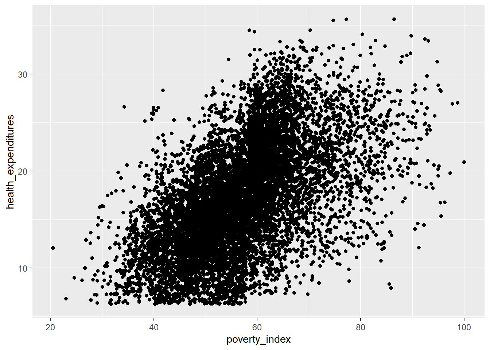
This visualization is so unclear; this is due to the number of observations being more than 9,000. Let’s just use the first 500 rows as this is for our practice and for visualization purposes.
This is more manageable; let’s try the scatterplot again, this time using the fch4_p1 dataset.
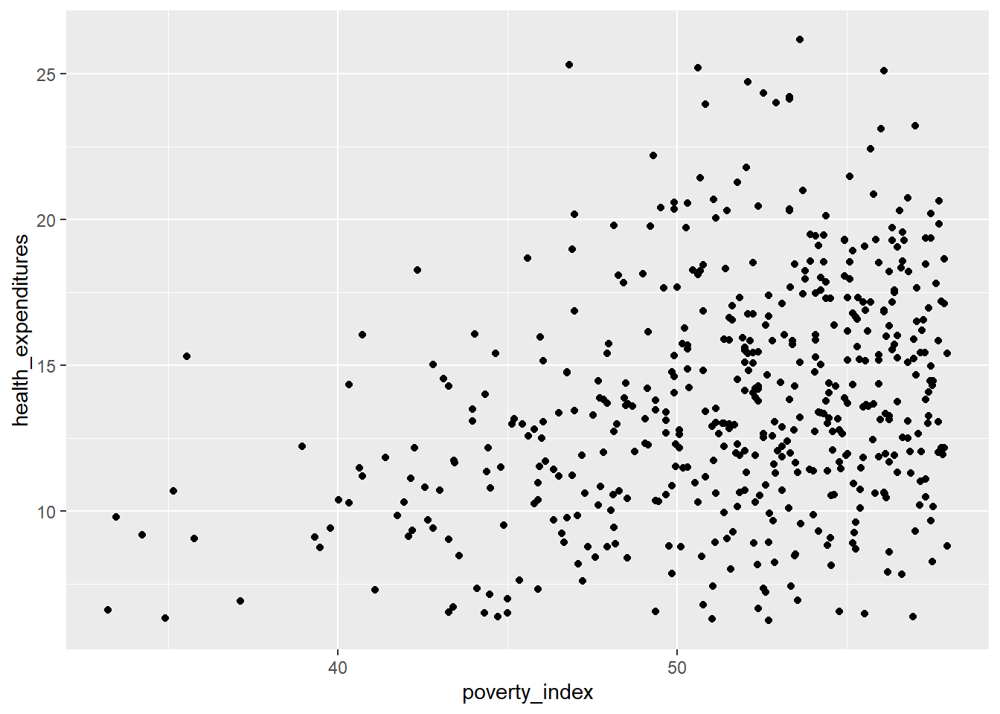
This is more visible; There are some points that overlap with each other. Let us incorporate some strategies to try and ensure that there will be no overplotting issues.
The first strategy is changing the transparency of the points. To control the transparency of points, we add the alpha argument. The range of transparency is from 0 to 1, with lower values corresponding to more transparency. The default value is 1. Let’s try to change the alpha to 0.5.
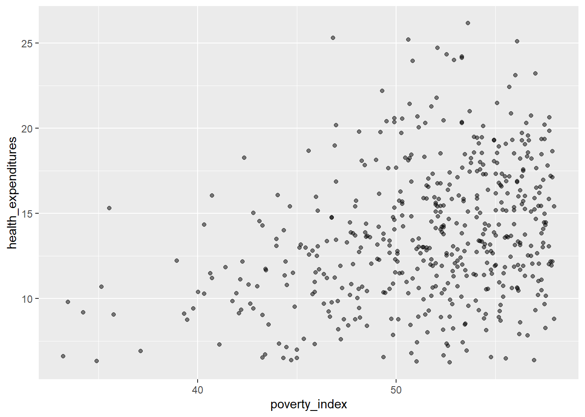
Some of the points are gray while the others are much darker, then we can see (slightly) the difference.
Another method that we can do is jittering the points on the plot to see the locations where there are overplotting points. Jittering adds randomness into the position of the points. To do this, we add geom_jitter() rather than geom_point(). Also, we need to edit the width and height. You can experiment but if you want less spread, pick values between 0.1 and 0.4.
fch4_p1 %>%
ggplot(aes(x=poverty_index,
y=health_expenditures)) +
geom_jitter(alpha = 0.5,
width= 0.3,
height= 0.3)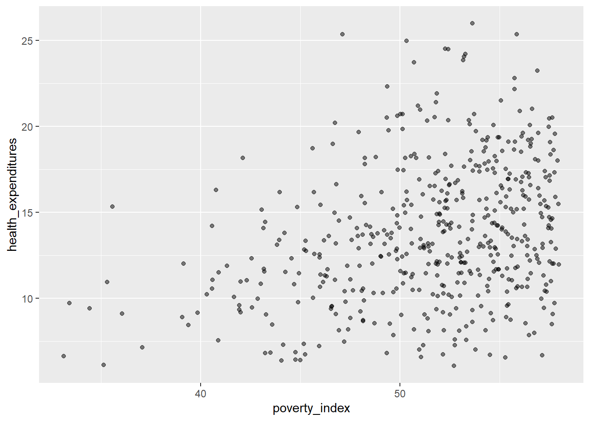
Let us add color to geom_jitter()
fch4_p1 %>%
ggplot(aes(x=poverty_index,
y=health_expenditures)) +
geom_jitter(alpha = 0.5,
color = "darkgreen",
width= 0.3,
height= 0.3)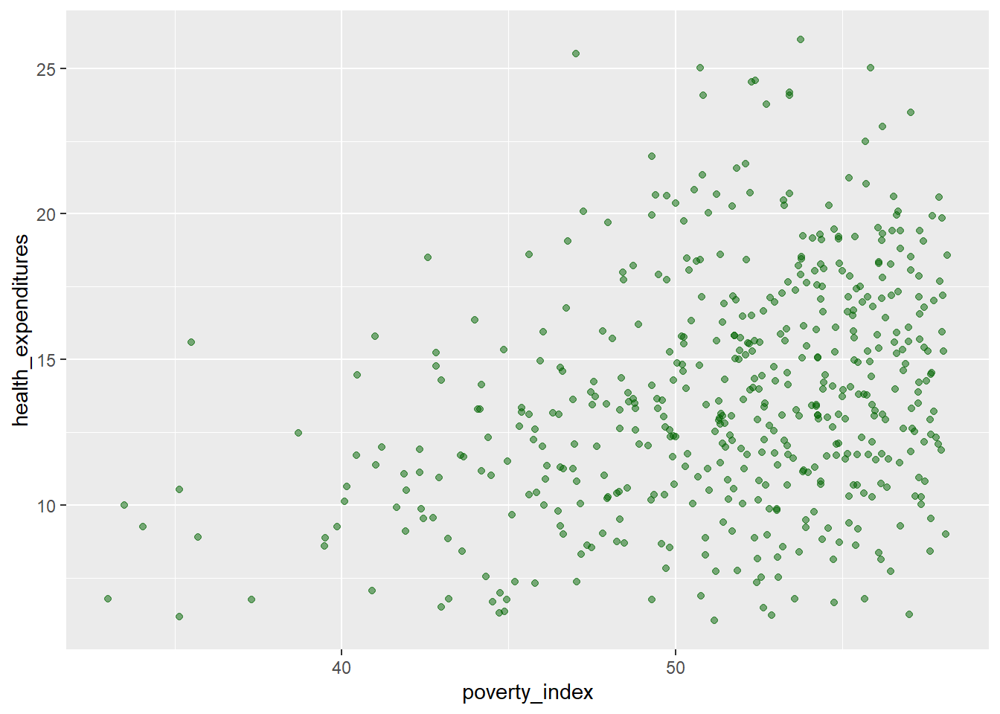
If you want to have different colors depending on a certain variable, we need to use a vector as an input in the argument color. Here though, we map features of the data to a certain color. When we map a variable in our data to the color of the points, ggplot2 will provide a different color corresponding to the different values of the variable. We will continue to specify the value of alpha, width, and height outside of the aes function because we are using the same value for every point.
fch4_p1 %>%
ggplot(aes(x=poverty_index,
y=health_expenditures))+
geom_jitter(aes(color=as.factor(enrolled)), #this is because the enrolled is of num type. To make it categorical, we need to change to as.factor. You can do this before placing it in the aes to remove the 'as.factor' in the legend
alpha=0.5,
width=0.3,
height=0.3)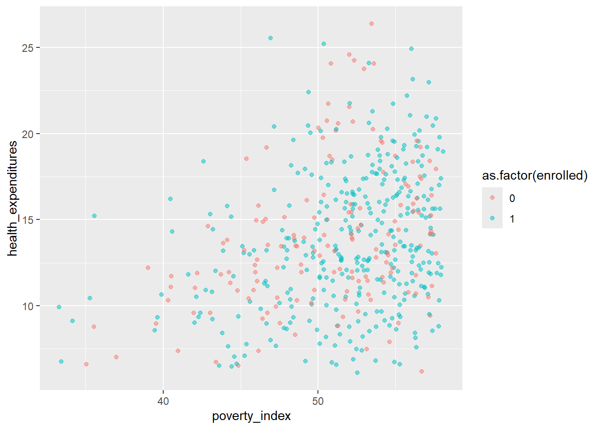
9.2.2 Boxplots
Here is how to make a box plot that is useful when summarizing the distribution of a continuous variable, highlighting the median, quartiles, and potential outliers.
To interpret a boxplot, take note of the following things:
- Horizontal Line in the Box: this is the median wherein it represents the 50% of the data.
- The Box Itself: The box represents the middle 50% of the data, the bottom of the box represent first quartile so 25% of the data falls below this value, and the top of the box represent the third quartile so 75% of the data falls below this value.
- Whiskers extend from the box to represent the range of the data excluding outliers so it usually end at the smallest and largest data points.
- Outliers are points outside the whiskers.
*The labs argument is to add labels in the plot.
fch4_p1 %>%
ggplot(aes(x = as.factor(treatment_locality), y = health_expenditures)) +
geom_boxplot(fill = "green") +
labs(title = "Box Plot: Health Expenditures by Treatment Locality",
x = "Treatment Locality",
y = "Health Expenditures") +
theme_minimal()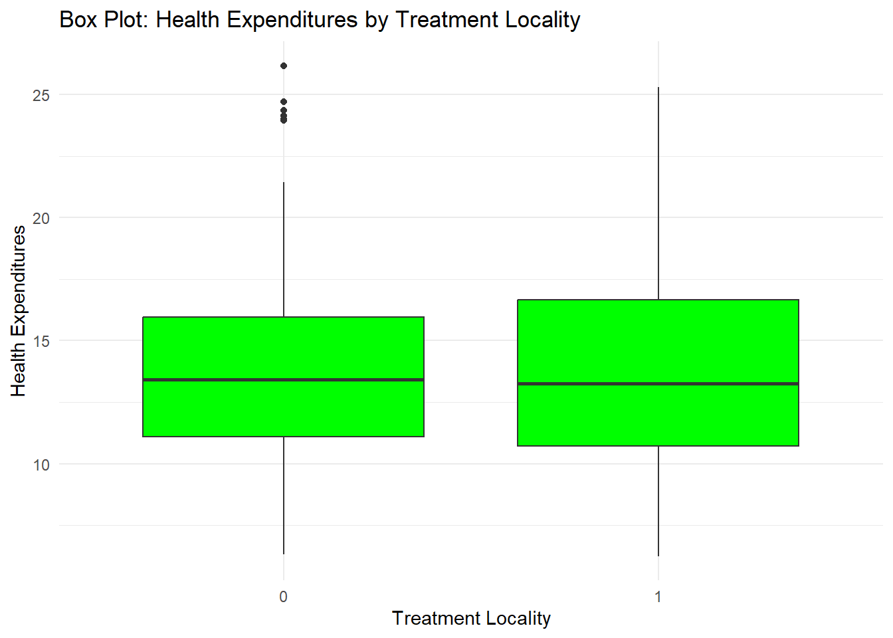
You can also add some points in the box plot by adding geom_jitter
fch4_p1 %>%
ggplot(aes(x = as.factor(treatment_locality), y = health_expenditures)) +
geom_boxplot(fill="green") +
geom_jitter(alpha = 0.5,
color = "tomato",
width = 0.2,
height = 0.2) +
labs(title = "Box Plot: Health Expenditures by Treatment Locality",
x = "Treatment Locality",
y = "Health Expenditures") +
theme_minimal()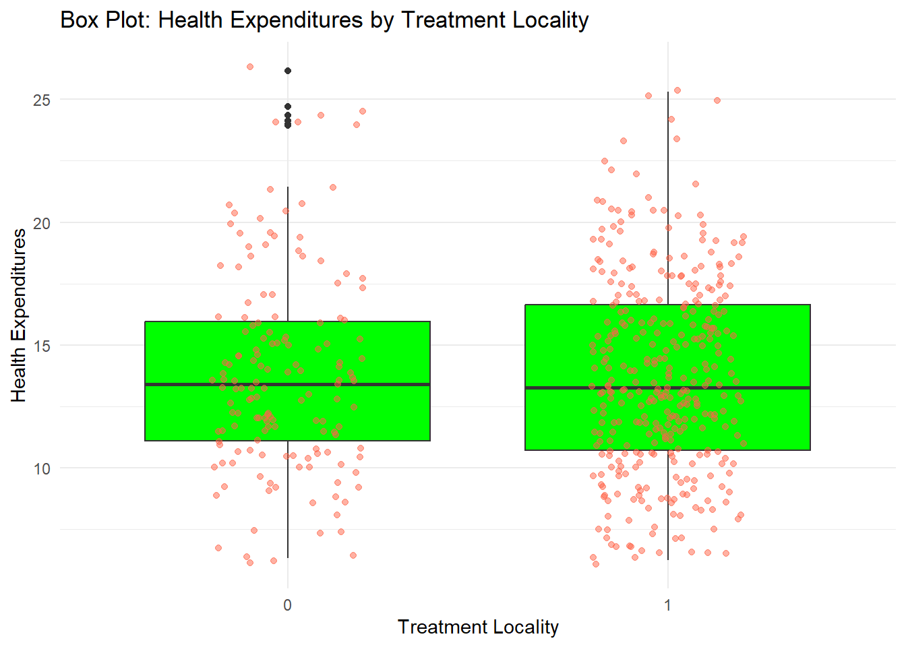
9.2.3 Bar plots
Barplots are also useful for visualizing categorical data. By default, geom_bar accepts a variable for x, and plots the number of instances each value of x (in this case, treatment_locality) appears in the dataset.
fch4_p1 %>%
ggplot(aes(x = as.factor(treatment_locality))) +
geom_bar(fill = "lightgreen") +
labs(title = "Bar Plot: Count of Localities by Treatment Locality",
x = "Treatment Locality",
y = "Count") +
theme_minimal()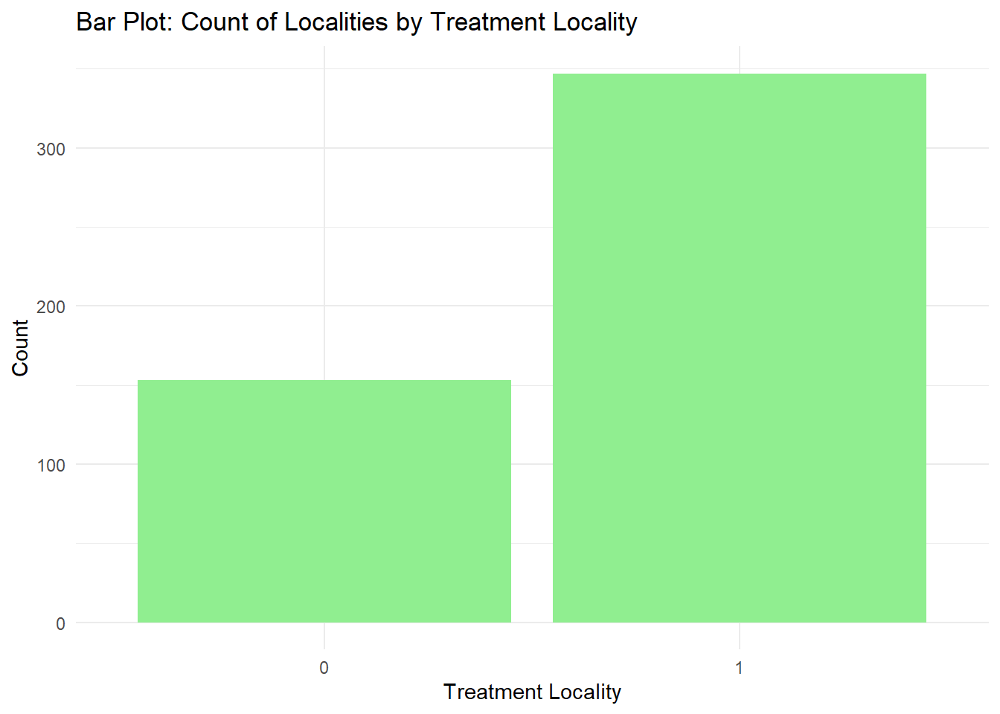
Let us change the fill to be locality_identifier. Note, we will have a lot of colors here but this is done for visualization purposes and practice.
fch4_p1 %>%
ggplot(aes(x = as.factor(treatment_locality), fill = as.factor(locality_identifier))) +
geom_bar() +
labs(title = "Bar Plot: Count of Localities by Treatment Locality and Locality",
x = "Treatment Locality",
y = "Count",
fill = "Locality") +
theme_minimal()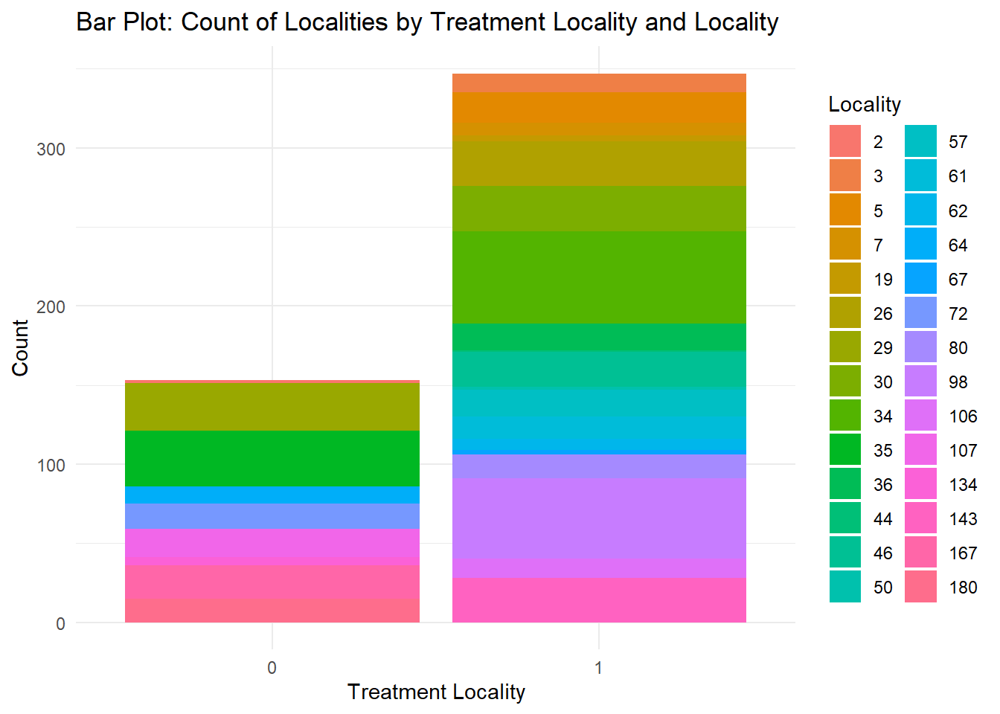
This creates a stacked bar chart. These are generally more difficult to read than side-by-side bars. We can separate the portions of the stacked bar that correspond to each village and put them side-by-side by using the position argument for geom_bar() and setting it to “dodge”.
fch4_p1 %>%
ggplot(aes(x = as.factor(treatment_locality), fill = as.factor(locality_identifier))) +
geom_bar(position = "dodge") +
labs(title = "Bar Plot: Count of Localities by Treatment Locality and Locality",
x = "Treatment Locality",
y = "Count",
fill = "Locality") +
theme_minimal()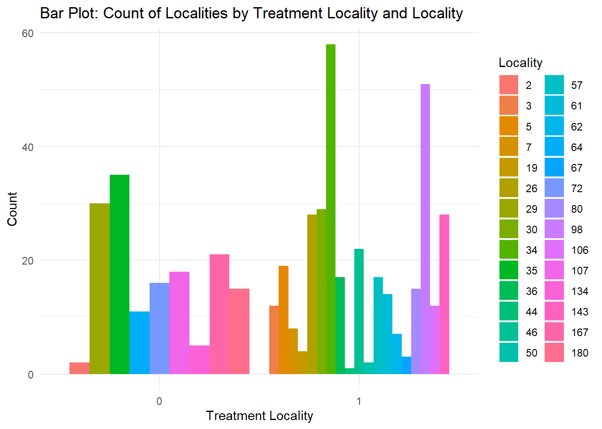
9.2.4 Faceting
ggplot2 has a special technique called faceting that allows the user to split one plot into multiple plots based on a factor included in the dataset.
fch4_p1 %>%
ggplot(aes(x = poverty_index, y = health_expenditures)) +
geom_point(alpha = 0.6, color = "darkblue") +
facet_wrap(~ locality_identifier, ncol = 4) +
labs(title = "Faceted Scatter Plot by Locality Identifier",
x = "Poverty Index",
y = "Health Expenditures") +
theme_minimal()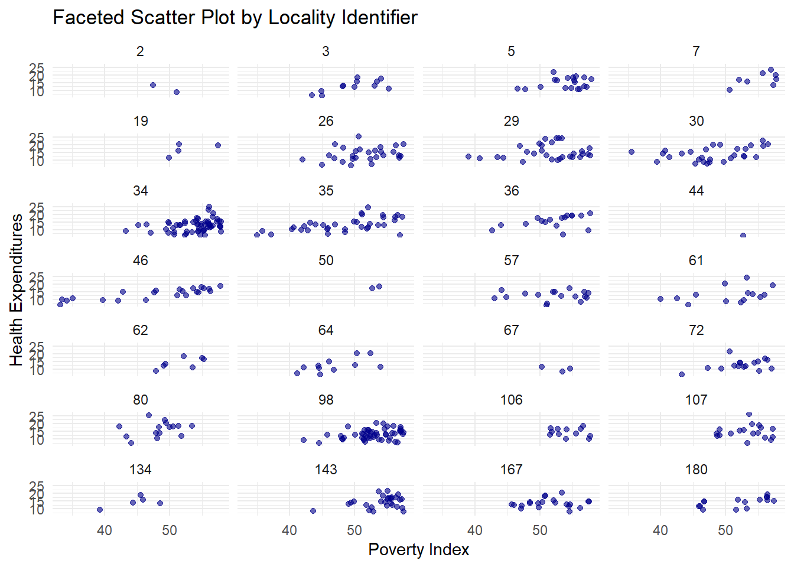
It doesn’t look that nice; let’s group the locality_identifier to make it more visually appealing:
fch4_p1 <- fch4_p1 %>%
mutate(locality_group = cut(locality_identifier,
breaks = c(20, 40, 60, 80, 100),
labels = c("20-40", "40-60", "60-80", "80-100"),
include.lowest = TRUE))
table(fch4_p1$locality_group)##
## 20-40 40-60 60-80 80-100
## 197 42 66 51fch4_p1 %>%
ggplot(aes(x = poverty_index, y = health_expenditures)) +
geom_point(alpha = 0.6, color = "darkgreen") +
facet_wrap(~ locality_group, ncol = 4) +
labs(title = "Faceted Scatter Plot by Locality Identifier",
x = "Poverty Index",
y = "Health Expenditures") +
theme_minimal()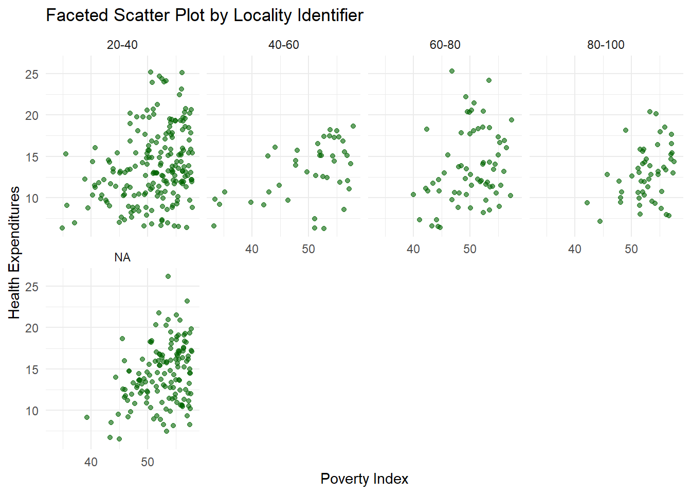
9.2.5 Pie Chart
Pie charts are used to illustrate proportions or parts of a whole (limited to a small number of categories). Before we do the pie chart, we need to count how many observations there are in the variable we want to analyze.
treatment_counts <- fch4_p1 %>%
count(treatment_locality)
ggplot(treatment_counts, aes(x = "", y = n, fill = as.factor(treatment_locality))) +
geom_bar(stat = "identity", width = 1) +
coord_polar(theta = "y") + #this makes it a pie chart
labs(title = "Pie Chart: Proportion of Treatment Localities",
fill = "Treatment Locality") +
theme_void() #another way to have a nice backgroundIf you want to put labels to each slice and let’s say you want the percentage for it, this is the code:
treatment_counts <- fch4_p1 %>%
count(treatment_locality) %>% #for count
mutate(percentage = n / sum(n) * 100, #calculate percentage
label = paste0(treatment_locality, "\n", round(percentage, 1), "%")) #add label for percentage
ggplot(treatment_counts, aes(x = "", y = n, fill = as.factor(treatment_locality))) +
geom_bar(stat = "identity", width = 1) +
coord_polar(theta = "y") +
geom_text(aes(label = label),
position = position_stack(vjust = 0.5), size = 4) +
labs(title = "Pie Chart: Proportion of Treatment Localities",
fill = "Treatment Locality") +
theme_void()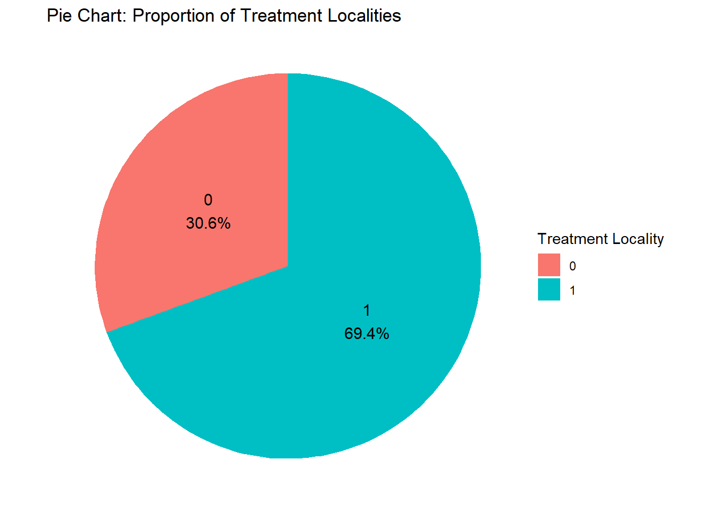
9.2.6 Histogram
Though it looks similar to a bar plot, a histogram is different since it displays the distribution of a continuous variable. It groups the data into intervals called bins and shows the frequency of data points within each bin.
fch4_p1 %>%
ggplot(aes(x=poverty_index))+
geom_histogram(binwidth = 5, fill="green", color="black")+
theme_minimal()
Here is a cheat sheet for ggplot2 from the ones who developed the package: ggplot2 Cheat Sheet
9.3 Visualizing Time Series Data
When visualizing time series data, it is important to ensure that the time variable is formatted as Date. For this portion of the lecture, we use Ch4PracticeB.xlsx which is found in the Modules. Make sure to clean the environment, load the file and rename the columns since they are quite long. I will not show the codes for this portion anymore as I am sure you already know how.
## used (Mb) gc trigger (Mb) max used (Mb)
## Ncells 4790054 255.9 8260645 441.2 8260645 441.2
## Vcells 9625600 73.5 51738630 394.8 246655674 1881.9## # A tibble: 6 × 12
## year nominal_gdp_current nominal_gdp_constant gdp_growth_current gdp_growth_constant
## <chr> <dbl> <dbl> <dbl> <dbl>
## 1 1986 692852 4298952 0.065 0.035
## 2 1987 777283 4486464 0.122 0.044
## 3 1988 910280 4786920 0.171 0.067
## 4 1989 1054529 5082939 0.158 0.062
## 5 1990 1227882 5239629 0.164 0.031
## 6 1991 1422958 5216764 0.159 -0.004
## # ℹ 7 more variables: total_debt <dbl>, debt_to_gdp <dbl>, interest_payments <dbl>,
## # amortization_payments <dbl>, phil_us_exchange_rate <dbl>, inflation <dbl>, fdi_net <dbl>Ensure the time variable is formatted as
DateI will not show the code for this since this has been done in previous lectures
Template
To make a time series visualization, this is the template:
ggplot(data, aes(x = time_variable, y = value_variable)) + geom_line(color = "blue") + #adds a trend line labs(title = "Time Series Plot", x = "Time", y = "Value") + theme_minimal()Time Series Plot
You might wonder why mine does not have a warning. Usually, there will be warnings that will come out. To remove it, simply add inside the
{r},warning=FALSElike:{r,warning=FALSE}ch4_p2 %>% ggplot(aes(x=year, y=nominal_gdp_current))+ geom_line(color="darkgreen")+ labs(title = "Time Series Plot of Nominal GDP (Current)", x = "Year", y = "Nominal GDP (Current)") + theme_minimal()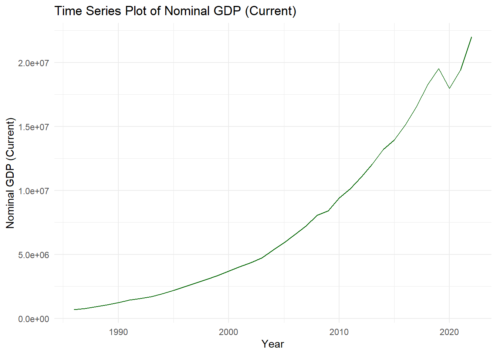
We can add points for clarity.
ch4_p2 %>%
ggplot(aes(x=year, y=nominal_gdp_current))+
geom_line(color="darkgreen")+
geom_point(color= "pink")+
labs(title = "Time Series Plot of Nominal GDP (Current)", x = "Year", y = "Nominal GDP (Current)") 
9.4 Practical: Visualizations
For this practical, we will use the quotas dataset. Please read the quotas_codebook to understand what each column means. Both files are found in the modules.
- Inspect the dataset by using
str()andsummary()and describe the types of variables available. - Plot a histogram of the total population (
tot_pop71_true). Adjust the number of bins to 15. What does this tell you about the distribution of population sizes in 1971? - Plot a bar plot of the count of Assembly Constituencies (
AC_type_noST) based on reservation status. Which category has the highest count? - Plot the literacy rates (
Plit71) against employment rates (P_W71). Add a regression line usinggeom_smooth(). What relationship do you observe? - Add color to the scatter plot by using color to distinguish between different reservation statuses (
AC_type_noST). How do the patterns differ across groups? - Create a box plot of literacy rates (
Plit71) for different reservation statuses (AC_type_noST). What do you notice about the spread of literacy rates across categories? - Create a faceted scatter plot of literacy rates (
Plit71) vs. employment rates (P_W71), grouped by reservation status (AC_type_noST). What differences can you identify between the facets? - Create a pie chart showing the proportion of constituencies by reservation status (
AC_type_noST). What does this chart reveal about the dataset? - What did you find most challenging or rewarding about working with this dataset? Which visualization techniques did you find most useful for communicating your insights?
- For the time series plot, I want you to search the Literacy rate, adult total (% of people ages 15 and above)from the World Bank. I want you to download as CSV the data. Then, I want you to choose India only. Create a time series plot for India.
9.5 Feedback: Practical Visualizations
For the Quarto Markdown files, you can include texts, like you are just regularly typing in Word. Only have the codes in code chunks then the analysis as text, rather than as comments.
Use
str()andsummary()by loading necessary libraries:ggplot2anddplyr## 'data.frame': 3134 obs. of 21 variables: ## $ State_number_2001: int 2 2 2 2 2 2 2 2 2 2 ... ## $ AC_no_2001 : int 1 2 3 4 5 6 7 8 9 10 ... ## $ AC_number_1976 : int 1 2 3 4 5 6 7 8 9 10 ... ## $ State_name_1976 : chr "Himachal Pradesh " "Himachal Pradesh " "Himachal Pradesh " "Himachal Pradesh " ... ## $ AC_name_1976 : chr "Kinnaur" "Rampur" "Rohru" "Jubbal-Kotkhai" ... ## $ AC_type_noST : chr NA "SC" "GEN" "GEN" ... ## $ tot_pop71_true : int 49835 56788 58969 50083 46745 53083 47237 55368 51571 46816 ... ## $ SC_percent71_true: num 19.4 33.1 29.5 24.7 28.9 ... ## $ Plit71 : num 27.7 25.7 18.9 30.8 18.5 ... ## $ Plit71_SC : num 14.07 13.67 5.64 18.19 11.15 ... ## $ P_W71 : num 60.5 52.3 34.1 50.7 60.1 ... ## $ P_al71_SC : num 12.4 1.65 6.98 8.06 2.89 ... ## $ P_al71_nonSC : num 4.29 1.05 8.29 8.17 1.61 ... ## $ P_elecVD01 : num 100 100 98.3 100 100 ... ## $ P_elecVD01_sc : num 100 100 97.8 100 100 ... ## $ P_educVD01 : num 93.1 92.9 86.9 72.2 79.1 ... ## $ P_educVD01_sc : num 94.8 95.8 87.4 74 79 ... ## $ P_medicVD01 : num 60.4 44.4 34 27.1 25.7 ... ## $ P_medicVD01_sc : num 58.7 48.7 32.9 29.9 25.4 ... ## $ P_commVD01 : num 94.7 70.9 74.7 91.9 52 ... ## $ P_commVD01_sc : num 90.2 71.8 77.3 91.8 54 ...## State_number_2001 AC_no_2001 AC_number_1976 State_name_1976 AC_name_1976 ## Min. : 2.00 Min. : 1.0 Min. : 1.00 Length:3134 Length:3134 ## 1st Qu.: 9.00 1st Qu.: 49.0 1st Qu.: 56.25 Class :character Class :character ## Median :22.00 Median :101.0 Median :117.00 Mode :character Mode :character ## Mean :19.47 Mean :119.5 Mean :133.50 ## 3rd Qu.:28.00 3rd Qu.:178.0 3rd Qu.:197.00 ## Max. :33.00 Max. :403.0 Max. :419.00 ## ## AC_type_noST tot_pop71_true SC_percent71_true Plit71 Plit71_SC ## Length:3134 Min. : 27568 Min. : 0.2017 Min. : 2.742 Min. : 1.966 ## Class :character 1st Qu.:133962 1st Qu.: 8.9001 1st Qu.:18.689 1st Qu.: 8.048 ## Mode :character Median :151681 Median :14.7556 Median :25.720 Median :13.305 ## Mean :154329 Mean :15.2454 Mean :28.525 Mean :16.304 ## 3rd Qu.:174641 3rd Qu.:20.0968 3rd Qu.:35.787 3rd Qu.:21.488 ## Max. :242840 Max. :66.5320 Max. :78.294 Max. :66.887 ## ## P_W71 P_al71_SC P_al71_nonSC P_elecVD01 P_elecVD01_sc ## Min. :21.66 Min. : 0.00 Min. : 0.00 Min. : 0.00 Min. : 0.00 ## 1st Qu.:28.93 1st Qu.:32.08 1st Qu.:10.66 1st Qu.: 89.02 1st Qu.: 90.53 ## Median :32.24 Median :51.61 Median :21.12 Median : 99.54 Median : 99.78 ## Mean :33.20 Mean :49.74 Mean :21.67 Mean : 89.15 Mean : 89.70 ## 3rd Qu.:36.72 3rd Qu.:68.02 3rd Qu.:30.91 3rd Qu.:100.00 3rd Qu.:100.00 ## Max. :60.52 Max. :92.88 Max. :66.69 Max. :100.00 Max. :100.00 ## NA's :58 NA's :58 ## P_educVD01 P_educVD01_sc P_medicVD01 P_medicVD01_sc P_commVD01 ## Min. : 0.00 Min. : 0.00 Min. : 0.00 Min. : 0.00 Min. : 0.00 ## 1st Qu.: 93.54 1st Qu.: 93.65 1st Qu.: 39.97 1st Qu.: 39.99 1st Qu.: 54.20 ## Median : 98.26 Median : 98.60 Median : 60.53 Median : 61.55 Median : 74.72 ## Mean : 95.03 Mean : 95.24 Mean : 61.05 Mean : 61.42 Mean : 71.88 ## 3rd Qu.: 99.86 3rd Qu.: 99.99 3rd Qu.: 83.22 3rd Qu.: 83.86 3rd Qu.: 93.84 ## Max. :100.00 Max. :100.00 Max. :100.00 Max. :100.00 Max. :100.00 ## NA's :58 NA's :58 NA's :58 NA's :58 NA's :58 ## P_commVD01_sc ## Min. : 0.00 ## 1st Qu.: 54.51 ## Median : 76.40 ## Mean : 72.70 ## 3rd Qu.: 94.44 ## Max. :100.00 ## NA's :58Plot a histogram of the total population (
tot_pop71_true). Adjust the number of bins to 15. What does this tell you about the distribution of population sizes in 1971?
Plot a bar plot of the count of Assembly Constituencies (
AC_type_noST) based on reservation status. Which category has the highest count?
Plot the literacy rates (
Plit71) against employment rates (P_W71). Add a regression line usinggeom_smooth(). What relationship do you observe?## `geom_smooth()` using formula = 'y ~ x'
Add color to the scatter plot by using color to distinguish between different reservation statuses (
AC_type_noST). How do the patterns differ across groups?## `geom_smooth()` using formula = 'y ~ x'
Create a box plot of literacy rates (
Plit71) for different reservation statuses (AC_type_noST). What do you notice about the spread of literacy rates across categories?
Create a faceted scatter plot of literacy rates (
Plit71) vs. employment rates (P_W71), grouped by reservation status (AC_type_noST). What differences can you identify between the facets?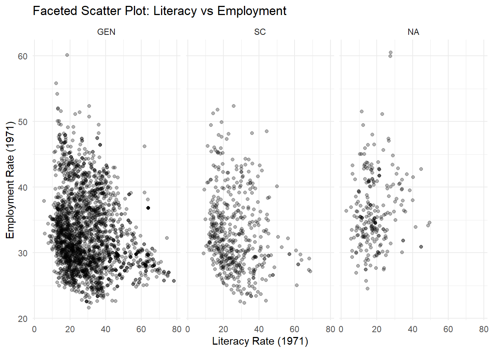
Create a pie chart showing the proportion of constituencies by reservation status (
AC_type_noST). What does this chart reveal about the dataset?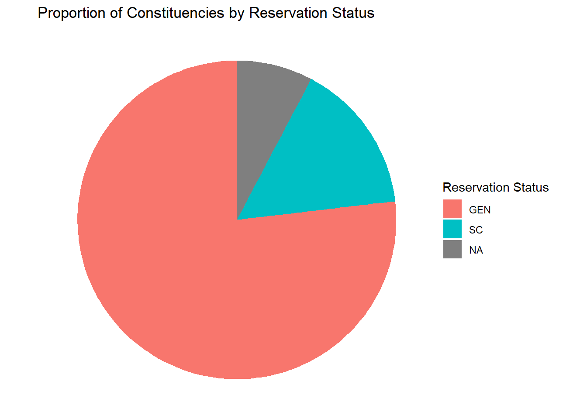
For the time series plot, I want you to search the Literacy rate, adult total (% of people ages 15 and above)from the World Bank. I want you to download as CSV the data. Then, I want you to choose India only. Create a time series plot for India.
Steps include:
- Loading the dataset
- Filtering the dataset to just include India
- Analyze the data; you will notice that it is in the wide dataset; it is therefore important to modify the dataset to long dataset for visualization
- Before doing the visualization, also notice that the time has a character “X” and some of the literacy rate does not have any data. Remove the “X” and the “NA”
library(tidyr)
library(dplyr)
# Load the dataset
world_bank_data <- read.csv("API_SE.ADT.LITR.ZS_DS2_en_csv_v2_160.csv", skip = 4)
# Filter data for India
india_data <- world_bank_data %>% filter(`Country.Name` == "India")
# Convert wide format to long format
india_long <- india_data %>%
select(-c(`Country.Code`, `Indicator.Name`, `Indicator.Code`)) %>%
pivot_longer(cols = -`Country.Name`, names_to = "Year", values_to = "Literacy Rate")
# 🛠 Remove "X" prefix from Year and convert to numeric
india_long$Year <- as.numeric(gsub("X", "", india_long$Year))
# Remove missing values
india_long <- india_long %>% filter(!is.na(`Literacy Rate`))
ggplot(india_long, aes(x = Year, y = `Literacy Rate`)) +
geom_line(color = "darkgreen", size = 1) +
geom_point(color = "red", size = 2) +
labs(title = "India's Literacy Rate Over Time",
x = "Year",
y = "Literacy Rate (%)") +
theme_minimal()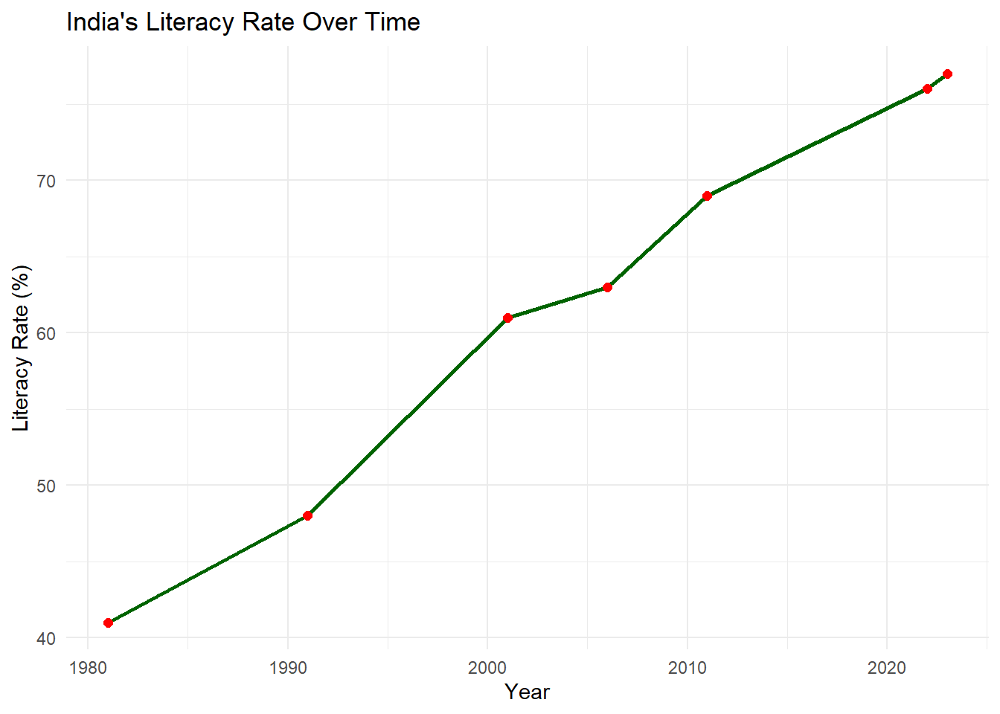